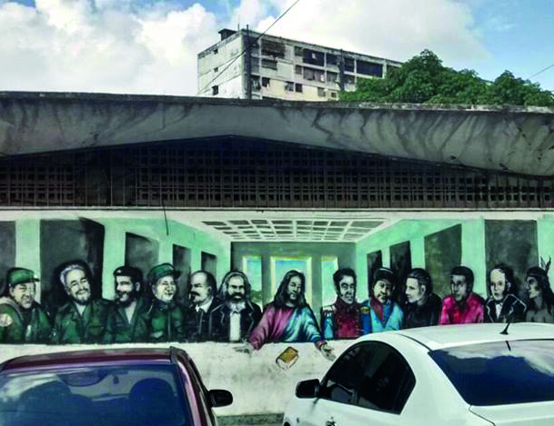

BAUTISMO DE FUEGO.
Con menos de 15 años, José de San Martín participó por primera vez de una batalla. Fue en África,
defendiendo la....

Vivir, luchar, AMMAR
“Somos triplemente discriminadas. Por mujeres, por pobres y por putas”, suelen decir las integrantes de...
“No pienso sobre el rol de la juventud.”
Martín tiene 29 años. Es de Pinamar, y precandidato a intendente de esa ciudad por el PRO.

B° 23 de Enero: Sierra Maestra
En el corazón de Caracas, Venezuela, a cocoyo de los cerros, está el barrio 23 de Enero. Entre sus
bloques de edificios...

“Nuestro rol es consolidar..."
Lucila es politóloga, tiene 29 años, y desde hace 11 milita en el Movimiento Evita...

“La juventud es la más damnificada.”
Johana tiene 26 años, vive en la ciudad de San Luis. Es maestra rural y precandidata a diputada
nacional por San Luis por el PTS...